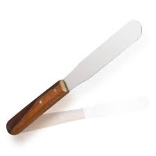

| The shape | English name | Arabic name | Uses |
|---|---|---|---|
| Graduated Cylinder | مخبار مدرج | To measure volume | |
| Bekar | كاس مدرج | To measure volume | |
| Mortar and pestle | الهاون والمدقة | To mixing and titration . | |
| Flask Or Volumetric | دورق مخروطي | To prepare liquid pharmaceutical preparation | |
| Water bath | حمام مائي | To heat and melt the material | |
|  | Spatula | سكين صيدلي | To mixing and weighting |
| Sensitive balance | ميزان حساس | To weigh the materials | |
| Dropper | قطارة | To measure small volume | |
| Filter paper | ورقة ترشيح | To filtration | |
| Bottle | عبوة | For filling | |
| Suppository Mold | قوالب التحاميل | Suppository filling | |
| Washing bottle | زجاج غسيل | Water ( to complete volume ) |